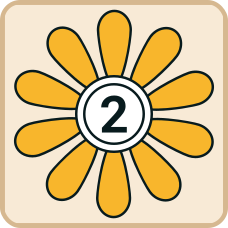
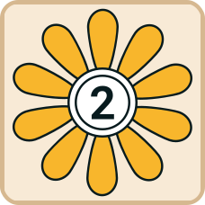
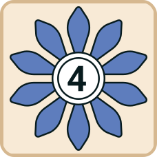
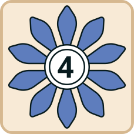

🎉 Today's puzzle completed! 🎉
Come back tomorrow for a new challenge!
🎉 Congratulations! 🎉
You've completed the sequence!
Number of attempts:
How to Play Kuzu's Maze
In Kuzu's Maze, your goal is collect all of the Flowers hidden throughout the maze. You'll utilize Power-ups to navigate the Maze while trying to avoid falling victim to lurking Vine Monsters. Come back each day for a new maze, and share your results with friends to compare who completed the Maze in the fewest attempts!
Gameplay
Explore the maze by entering from one of the edges (selecting a tile on the edge of the grid). You can select tiles in orthogonal directions (up, down, left, right) from your current tile. Tiles that are flipped over are no longer available to move to, with the exception of Stepping Stones.
Stepping Stones

Stepping Stones are free spaces and are helpful for finding a Successful Path. After revealing a Stepping Stone, you can move through it as many times as you'd like, allowing for easier movement and avoiding turn-ending faults.
Goal Flowers
 

 


Reveal all of the flowers in ascending order 1 to 5 to win the game.
Faults

A player's turn ends when a fault occurs. Faults include revealing a Flower in the wrong order, becoming stuck with no available moves (requiring a restart) or when they reveal a Vine Monster.
Power-Ups
There are a variety of power-ups to help you navigate the Maze.
Spray (Continuous, Refillable)
Allows you to Spray and neutralize a single Vine Monster you flip over, and by doing so, move onto that tile and continue that turn. Flipping another Vine Monster without refilling the Spray results in your turn ending. Spray is refilled when you correctly reveal the next Flower.
Flower Power (Single-Use)

Allows you to get your next Flower out of order, if you so choose. Upon revealing your next Flower, collection resumes as normal, in ascending order.
Shears (Continuous)
When revealed, Shears allow a player to begin moving diagonally in addition to a player's basic moves. This power-up is ongoing and lasts until your turn is over.
Portal (Single-Use)

When revealed, the Portal tile gives you the option of flipping any available tile, regardless of location in the Maze. If you don't trigger a Fault, you move to that newly flipped tile, and continue to play from there.
Grapple (Single-Use)

Allows you to flip any tile in the maze, but you stay on the Grapple tile. Any tile effect is activated immediately for the newly flipped tile, and then play resumes from the Grapple tile.
Winning
Reveal all Flowers in ascending order 1 to 5 to complete the Maze and win. Try to do it with as few tiles and in as few turns as possible!